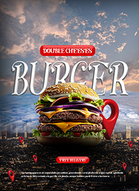
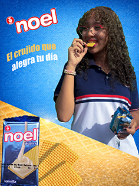
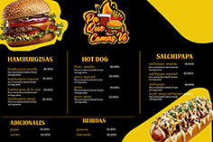
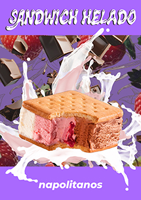
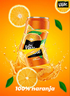
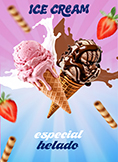

Creación de logotipos para marcas y emprendimientos
Desarrollo un logo para una empresa.
Aprendiz de Integración de Contenidos Digitales
Hola, soy
Técnico en
Contenidos Digitales
Soy aprendiz SENA del programa Técnico en Integración de Contenidos Digitales.
Me interesa el diseño, la multimedia, la tecnología y la creación de contenidos digitales.

Soy aprendiz del programa Técnico en Integración de Contenidos Digitales. Durante mi proceso de formación he desarrollado conocimientos relacionados con diseño gráfico, edición de imágenes, producción multimedia, diseño web y creación de contenidos digitales.
Poseo conocimientos en diseño web, edición de imágenes, producción de contenido digital y manejo de herramientas multimedia. Me caracterizo por ser una persona responsable, creativa, organizada y comprometida con el aprendizaje continuo, buscando siempre desarrollar soluciones digitales innovadoras y de calidad.

A continuación presento algunos trabajos realizados durante mi proceso de formación.
Desarrollo un logo para una empresa.

Participación en concursos de diseño con propuestas creativas.

Diseño de piezas gráficas para comerciales y campañas publicitarias.
Algunos trabajos y ejercicios realizados durante mi proceso de formación. Filtra por categoría para explorar cada tipo de proyecto.

Composición basada en jerarquía visual y contraste de color para destacar el mensaje principal.
Illustrator
Boceto digitalizado y coloreado por capas, aplicando teoría del color para dar profundidad.
Photoshop
Ejercicio de retícula y tipografía aplicado a una pieza gráfica de práctica.
Canva
Retoque y ajuste de color, luces y sombras para mejorar la calidad final de la foto.
Photoshop
Creación de una ilustración digital utilizando herramientas de diseño para representar un concepto visual creativo, atractivo y detallado.
PhotoshopEjercicio de trazo y color aplicado a un elemento gráfico para uso web.
PhotoshopEjercicio de ilustración digital trabajando trazo, color y composición del elemento visual.
PhotoshopComposición de afiche aplicando jerarquía visual y armonía de color para transmitir el mensaje.
Photoshop